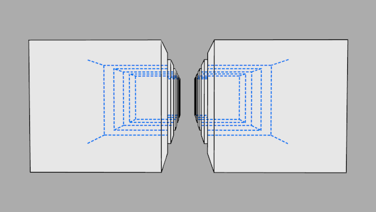
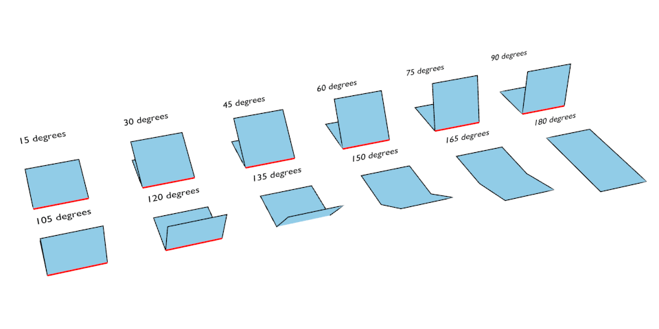
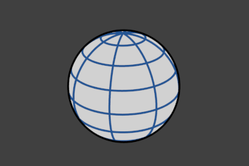
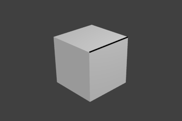
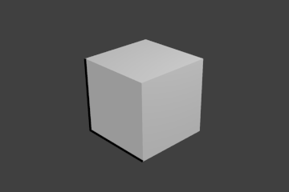
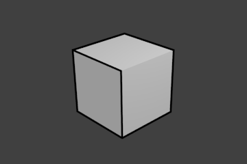

Line Set¶
Reference
| Panel: |
|---|
A line set selects, among the lines (edges) detected by Freestyle, which ones will be rendered using its attached line style, through various methods.
Freestyle Line Set panel.
Visibility¶
There are three choices for selecting edges by visibility.
- Visible
- Only lines occluded by no surfaces are rendered.
- Hidden
Lines occluded by at least one surface are rendered.

Proof of concept of visible and hidden edges by LightBWK (blend-file)
- QI Range
QI stands for Quantitative Invisibility. Lines occluded by a number of surfaces in the given range are rendered.
- Start and End
- Min/max number of occluding surfaces for a line to be rendered.
QI Range proof of concept demo, Start: 3, End: 7, by LightBWK (blend-file)
{kind=link}
Edge Types¶
Edge types are basic algorithms for the selection of lines from geometry. When using the parameter editor you have to choose at least one edge type in order to get a render output, but several edge types can be combined in one line set. Edge types can also be excluded from calculation by pressing the X next to them.

Examples of some basic edge types: Silhouette (green), Crease (black), Border (blue) and Edge Marks (red) (blend-file by LightBWK).
- Silhouette
- Draws silhouettes around your closed objects by rendering lines where the surface normal transitions between pointing toward and away from the camera. It is often good for organic objects (like Suzanne & Sphere), and bad for sharp edges, like a box. It cannot render open mesh objects like open cylinders and flat planes.
- Crease
Shows only edges whose adjacent faces form an angle sharper than the defined view map’s Crease Angle.
Crease Angle proof of concept for 121° by LightBWK (blend-file).
- Border
- Border shows open mesh edges, i.e. edges that belong to only one face. An open cylinder has open edges at the top and bottom, and a plane is open all around. Suzanne’s eye socket is an open edge.
- Edge Marks
- Renders marked edges. See Edge Marks for details.
- Contour
- Draws lines around each object, separating it from other objects behind it, or the scene background.
- External Contour
- Draws lines around all objects, separating them from the scene background, but not each other.
{kind=link}
{kind=link}
Left pair: Contour; Right pair: External Contour.
- Suggestive Contour
- Draws some lines which would form the Silhouette of the mesh if the view point was shifted. Depends on your view map settings for Kr Derivative Epsilon and Sphere Radius (further information: File:Manual-2.6-Render-Freestyle-PrincetownLinestyle.pdf).
- Material Boundary
- Draws lines where two materials meet on the same object.
- Ridge & Valley
- Draws lines marking crests of ridges and valleys, i.e. places where the surface curvature is at its minimum or maximum. Depends on your Sphere Radius view map settings.
Edge Marks¶
In Edit Mode you can mark “Freestyle Edges” in the same manner you can mark “Seams” for UV unwrapping or “Sharp” for edge split. These marked edges are available to render when you select Edge Mark.
This is done as follows:
- Select the mesh object and enter Edit Mode.
- Select the edges you want to be marked.
- Press Ctrl-E and select Mark Freestyle Edge.
Edge marks are useful when you want to draw lines along particular mesh edges. The examples below explain the use of edge marks.

Marking Freestyle Edges in Edit Mode; the edge marks are highlighted in green.
With Edge Marks enabled, the previously-marked lines are always rendered. You can see the black contour lines and the blue lines that are made with edge marks.

Render without Edge Marks. |

Render with Edge Marks enabled. |
What are edge marks good for?
- When you need to render marks on an almost-flat plane, when other edge types cannot detect any line.
- When you want full control of edge rendering. Often used for edges of squarish shapes.
- Mark the whole base mesh to be rendered for base mesh preview.
What are edge marks not good for?
- Round outer edges (use instead Contour/External Contour/Silhouette).
Face Marks¶
Face marks are useful for removing lines from certain areas of a mesh.
To set a face mark:
- Select a mesh object and enter Edit Mode.
- Select the faces you want to be marked.
- Press Ctrl-F and select .
In this example, two faces of the default cube are marked like the image on the left. On the right is a render without face marks activated.

Marked faces (Edit Mode). |

Render output. |
The line selection can be controlled via inclusion and faces options:
- Inclusive/Exclusive
- Whether to include or exclude edges matching defined face mark conditions from the line set.
- One Face
- (De)select all edges which have one or both neighbor faces marked.
- Both Faces
- (De)select all edges which have both of their neighbor faces marked.

Inclusive, One Face. |

Inclusive, Both Faces. |

Exclusive, One face. |

Exclusive, Both Faces. |
Collection¶
Include or exclude objects for line calculation, based on their belonging to a Collection.
- Collection
- The name of the object collection to use.
- Inclusive/Exclusive
- Whether to include or exclude lines from those objects in this line set.
Image Border¶
Causes Freestyle to only take geometry within the image border into consideration for line calculation. This reduces render times but increases continuity problems when geometry is moved out of and into camera view.